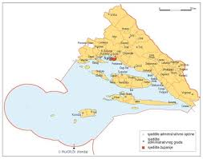
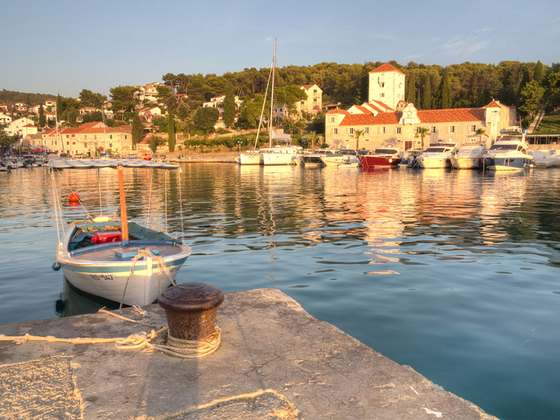

Jedna je od najneobičnijih i ekološki najbolje očuvanih, gastronomski najbogatijih, ali još nedovoljno poznatih
dijelova Hrvatske, pa i Europe. Središnji dio Dalmacije obuhvaća prostranu, krševitu Zagoru, divne otoke, a povijesno
i zemljopisno čini najvredniji dio obale Jadrana. U njoj su na jedinstven način raznoliki krajolici povezani u osebujan
spomenik prirode, ali i hrvatske nacionalne povijesti. Središte Šibensko-kninske županije je Šibenik, on je ujedno i kulturno-prosvjetno,
administrativno i gospodarsko središte županije..

Splitsko-Dalmatinska županija
Regija koja je lijepa, raznolika, vesela, raspjevana i bogata i ljudima i poviješću i
znamenitostima. Vole se Dalmatinci hvaliti kako im je regija jedna od rijetkih koja spaja toliko raznolikosti u savršen sklad.
Ova županija smještena je u središnjem dijelu regije Dalmacija. Inače, Dalmacija ima 16 gradova,
glavno joj je sjedište grad Split, drugi po veličini grad u Hrvatskoj. Prostore današnje županije ljudi su rano naselili
zbog blage klime, plodnog tla i brojnih izvora pitke vode.
Otoci Srednje Dalmacije
Šolta:
..
Tekst slika:
Šolta je otok u srednjoj Dalmaciji nedaleko Splita, zapadno od Brača, površine 51,9 km², koji administrativno pripada Splitsko-dalmatinskoj županiji. Istočno od ovog otoka nalazi se otok Brač a zapadno je Drvenik Veliki. Jugoistočno je Hvar, a sjeverno je Split. Ovaj otok je od Splita udaljen 15 km ili oko 9 nautičkih milja. Od kopna na sjeveru dijeli je Splitski kanal, od otoka Brača na istoku uzana Splitska vrata, a od otoka Drvenika Velog na zapadu Šoltanski kanal). Sjeverno od Šolte je otok Čiovo jugoistočno otok Hvar i južno otok Vis. Uz otok Šoltu, kod uvale Maslinica, nalazi se još sedam otočića. Glavno mjesto na otoku su Grohote. Naselja na otoku su: Grohote, Gornje Selo, Srednje Selo, Donje Selo, Stomorska,Nečujam, Rogač i Maslinica.
Drvenik Veli:

Drvenik Veli je otok u splitskom akvatoriju, sjeverozapadno od Šolte, od koje ga dijeli Šoltanski kanal. Najveće naselje na otoku je Drvenik Veliki, koji je, administrativno, gradsko naselje Grada Trogira. Otok okružuje nekoliko manjih otoka: istočno od otoka su Krknjaš Mali i Krknjaš Veli, a južno Orud i Mačaknar. Drvenik Mali, 3 puta manji od Velog, je oko 2 km zapadno. Kanal između Drvenika Velog i Malog naziva se Drvenička vrata, a u njima je otočić Malta. Obala otoka je razvedena, s puno uvala s pješčanim i šljunčanim plažama. Glavno naselje se nalazi u najdubljoj uvali na otoku, a valja izdvojiti i uvale Grabule (zapadno od naselja Drvenika Velog), Mala Luka (na zapadu otoka), Pernatica (jug) i Solinska (jug). Uvala Grabule jedina je zaštićena od svih vjetrova. Na istočnoj strani otoka, uz otočiće Krknjaše, je mjesto povoljno za sidrenje..
Hvar:

Hvar pripada grupi srednje-dalmatinskih otoka. Nalazi se u Splitsko-dalmatinskoj županiji, usred skupine otoka koji su dijelom ove županije. Gledano po neposrednom susjedstvu, sjeverno od njega se nalazi otok Brač, a južno od njega se nalaze Šćedro (od kojeg ga dijeli Šćedorski kanal), Vis (više prema jugozapadu), Paklinski otoci, Korčula i poluotok Pelješac. Otok je podijeljen je u 2 grada i 2 općine (Grad Hvar, Grad Stari Grad, Općina Jelsa i Općina Sućuraj). Otok Hvar, kralj među dalmatinskim otocima, poznat je od antike po svom vaznom strateškom i nautičkom polozaju, bogatstvu slojevitosti povijesnih razdoblja, kulturnim i prirodnim spomenicima i knjizevnosti. Zahvaljujući blagoj klimi, toplim zimama i ugodnim ljetima, domaćin je brojnim gostima, znanstvenicima i putnicima namjernicima koji su privučeni raskošnom mediteranskom prirodom, bogatom tradicijom i noćnim životom. Hvar se danas smatra jednim od deset najljepših otoka na svijetu.
Chapter 20
This chapter explains ba bla bla